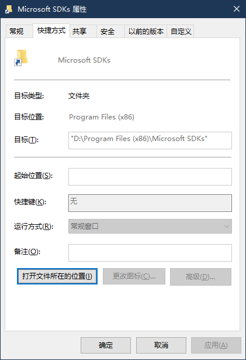

我的SSD只有120G，装完一些必备的东西就不够用了。
vs2019 正式版发布的时候，把旧版的VS卸了，瞬间空出30G。。
第一步
- 从微软官网下载 Visual Studio Community 2019(其他版本类似)
- 运行下载的安装程序，到选择安装的组件时退出程序
第二步：使用 mklink 创建链接
原理：这一步的目的是欺骗 VS 安装程序，把它（将要或已经）放在系统盘的内容转移到其他盘，这样 VS 安装时仍然读写的是系统盘的路径，但实际上这些路径被我们转移到了非系统盘了，如此便释放了系统盘空间。
基本用法：1
mklink /d "链接需要放置的路径" "链接指向的路径"
以下为 VS 占用的系统盘文件夹路径（我的系统盘符是 C）1
2
3
4
5C:\Program Files (x86)\Microsoft SDKs
C:\Program Files (x86)\Microsoft Visual Studio
C:\Program Files (x86)\Windows Kits
C:\ProgramData\Microsoft\VisualStudio
C:\ProgramData\Package Cache
知道了原理操作起来就十分简单，这些必要的文件夹如果有文件在里面，就把这些文件夹移动到非系统盘，如果没有就删除他们（因为之后我们要创建链接，不删除就不能用他们的名字创建链接）
对上面那些文件夹移动完成后使用mklink /d创建链接即可
下面是一段代码示例（注意 cmd 以管理员身份运行）：
1 | mklink /d "C:\Program Files (x86)\Microsoft SDKs" D:\Program Files (x86)\Microsoft SDKs" |

目标文件夹可以自己根据喜好自定义，对安装无影响。
第三步：以正常方式安装 VS2017
第一步会在你的系统上装一个 Visual Studio Installer，这次直接运行这个程序安装。
注意：安装程序中自定义路径的那一步最好还是自定义到非系统盘，这样能最小化系统盘占用。
温馨提示：目标文件夹一定要创建好，不然从 C 盘点过去会提示不存在导致 VS 安装失败。